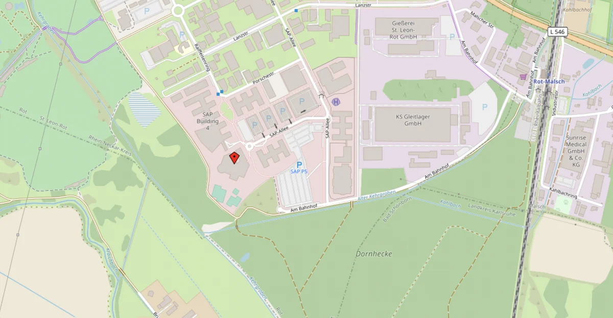

Getting here
Location
ROT3, SAP-Allee 27, 68789 St. Leon-Rot (Germany)
Directions
By Car
From the Autobahn 6, taking the Wiesloch/Rauenberg exit toward Walldorf:
- Follow the L723 (B39) highway toward Walldorf/Speyer.
- At the L723/B3 crossing, follow the signs toward Bruchsal and turn right onto the B3 highway.
- Continue for approximately three miles to the B3/L546 (Uhlandshöhe) crossing, and turn right toward St. Leon-Rot.
- Continue to the exit for the St. Leon-Rot industrial park and turn left onto Opelstraße.
- After approximately 500 yards, you will come to a traffic circle. Turn left onto SAP-Allee.
- At the third intersection, turn right and follow SAP-Allee.
From the Autobahn 5, taking the Walldorf/Wiesloch exit toward Walldorf:
- Follow the L723 (B39) toward Walldorf/Wiesloch (passing by Walldorf‘s industrial park).
- At the L723/B3 crossing, follow the signs toward Bruchsal and turn left onto the B3 highway.
- Continue for approximately three miles to the B3/L546 (Uhlandshöhe) crossing and turn right toward St. Leon-Rot.
- Continue to the exit for the St. Leon-Rot industrial park and turn left onto Opelstrasse.
- After approximately 500 yards, you will come to a traffic circle. Turn left onto SAP-Allee.
- At the third intersection, turn right and follow SAP-Allee.
By public transport
From Mannheim, Heidelberg, or Karlsruhe:
- Take the railway line S3 or S4 (DB Regio AG: Germersheim – Speyer – Ludwigshafen – Mannheim) to the Rot-Malsch train station.
- From the Rot-Malsch train station, take bus 719 toward “Industriegebiet St. Leon-Rot, SAP.” It is a five-minute ride to reach the SAP buildings.
The station “Rot-Malsch” is within walking distance (nice path along the forest). Trains will also run at night – so no worries about getting back after the evening event.
Further information on bus and train schedules can be found on the Web site of the Rhein-Neckar public transport association: www.vrn.de.
Parking
The closest parking facilities to the venue are the car parks P1/P2/P3/ as well as the parking area P5. Parking is free.